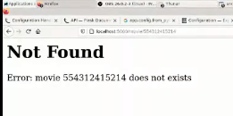
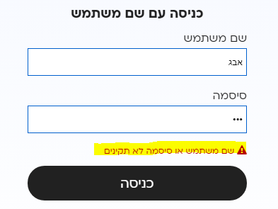

כאן תוכלו להעלות שאלות לים עבור הלייב היום בערב.
2 לייקים
בשם אליאור:
- התייחסות לסוגיית: Sqlite עם Heroku
- לדבר קצת על הנושא של אבטחה במאגר נתונים ולכל הסוגיה של Authentication. (במיוחד בכל הקשור ליוזרים שאנו יוצרים המידע עליהם וכו)
- קצת ORM דוגמא לשימוש בorm מסויים שהוצע בפורום. היתרונות \ חסרונות.
3 לייקים
הייתי שמח להצעות על טיפול במצבים בהם אין לנו תוצאות למשל אם יוזר מנסה להכניס משתמש שלא קיים \ או אימייל שלא קיים לנו בDB - ואיך מודיעים למשתמש חזרה בfron למשל.
אני יודע שיש מדריכים לזה אבל אני אישית ממש הסתבכתי גם בפרוייקט הקודם.
לייק 1
בעבודה עם flask-wtforms, לאחר יצירת טופס עם מספר שדות, אני לא מוצא דרך לעשות שאילתה על form.field.data בפונקציה של הראוט. רק במשלוח של הדאטה לשאילתה באופן ישיר ל query בדאטה בייס
אשמח גם לראות איך מחזירים שגיאה שלא מפילה את הדף עם שגיאה(404), אלא מציין מה השגיאה. לדוגמה: שם המשתמש או הסיסמה לא תקינים
עשינו את זה בשיעור היום לדעתי (העברנו הודעה ל¯abort בפרמטר השני)
הצגת את האפשרות הבאה (שגיאה לא בדף האתר):

אני מתכוונת לתצוגה הבאה:

אה, הבנתי.
זה קצת יותר טריקי אם אנחנו רוצים לשמור על ה־404 ועלול לדרוש JavaScript.
אם מוכנים לוותר על ה־404, פשוט יוצרים div ריק בעמוד ה־login ובו שמים {{error}}.
אם יש שגיאה, מעבירים ל־render template את הפרמטר error ואז היא מופיעה.
אם לא, אפשר להעביר מחרוזת ריקה או לא להעביר 
2 לייקים
תוכל בבקשה להעלות את הקוד שהיה בלייב?
תודה
המחברת: Untitled2.ipynb (8.5 ק״ב)
אתר הסרטים: movies_site.zip (2.3 מ״ב)
חשבתי כמה פעמים אם להעלות כי טכנית חלק גדול מהתרגיל הוא להיות מסוגלים לחפש בעצמכם באינטרנט –
כיוון שזה חלק משמעותי מהעבודה כמתכנתים.
אם אתם יכולים, נסו להתמודד בעצמכם לפני שאתם מסתכלים על הפתרון שב־zip.
לייק 1
הקוד המעודכן – החיבור להרוקו:
import private
database = PostgresqlDatabase(
private.DATABASE,
user=private.USER,
password=private.PASSWORD,
host=private.HOST,
port=private.PORT,
)
app.py:
from typing import Any, List
import bcrypt
from flask import Flask, abort, render_template, request, session, url_for
from playhouse.shortcuts import model_to_dict
import peewee
from werkzeug.utils import redirect
from models import (
Companies, Movies, MoviesCompany, Users, database
)
app = Flask(__name__)
app.config.from_pyfile('config.py')
@app.before_request
def _db_connect():
database.connect()
@app.teardown_request
def _db_close(_):
if not database.is_closed():
database.close()
@app.route('/movie/<int:movie_id>')
def show_movie_page(movie_id: int) -> List[Any]:
if session.get('username') is None:
return abort(403, 'You must be logged in to view the movies page')
# movie = Movies.select().where(Movies.id == movie_id).get()
try:
movie = Movies.get_by_id(movie_id)
except peewee.DoesNotExist:
abort(404, f'Error: movie {movie_id} does not exists')
movie_dict = model_to_dict(movie)
return render_template('movie.j2', **movie_dict)
@app.route('/movies')
def movies_list():
movies_query = (
Movies
.select(
Movies.id.alias('id'),
peewee.fn.ARRAY_TO_STRING(
peewee.fn.ARRAY_AGG(Companies.name), ', ',
).alias('companies'),
)
.join(MoviesCompany)
.join(Companies)
.group_by(Movies.id)
.limit(50)
)
full_query = (
Movies
.select(Movies, movies_query.c.companies.alias('companies'))
.join(movies_query, on=(Movies.id == movies_query.c.id))
)
movies = list(full_query.dicts())
return render_template('list.j2', movies=movies)
@app.route('/register', methods=['GET', 'POST'])
def register():
if request.method == 'GET':
return render_template('register.j2')
salt = bcrypt.gensalt(prefix=b'2b', rounds=10)
unhashed_password = request.form['password'].encode('utf-8')
hashed_password = bcrypt.hashpw(unhashed_password, salt)
fields = {
**request.form,
'password': hashed_password,
'level': 1,
}
user = Users(**fields)
user.save()
return 'Success!'
@app.route('/login', methods=['GET', 'POST'])
def login():
if request.method == 'GET':
return render_template('login.j2')
username = request.form['username']
if username is None:
return abort(400, 'No username supplied')
try:
user = Users.select().where(Users.username == username).get()
except peewee.DoesNotExist:
return abort(404, f'User {username} does not exists')
password = request.form['password'].encode('utf-8')
real_password = str(user.password).encode('utf-8')
if not bcrypt.checkpw(password, real_password):
return abort(403, 'Username and password does not match')
session['username'] = user.username
session['name'] = user.name
return redirect(url_for('hello_world'))
@app.route('/admin/movie/<int:movie_id>', methods=['GET', 'POST'])
def admin(movie_id):
if request.method == 'GET':
if session.get('username') is None:
return abort(403, 'You must be logged in to view the movies page')
try:
movie = Movies.get_by_id(movie_id)
except peewee.DoesNotExist:
abort(404, f'Error: movie {movie_id} does not exists')
movie_dict = model_to_dict(movie)
return render_template('admin.j2', **movie_dict)
elif request.method == 'POST':
print(dict(request.form))
movie_id = request.form['id']
movie = (
Movies
.update(**request.form)
.where(Movies.id == movie_id)
.execute()
)
return redirect(url_for('show_movie_page', movie_id=movie_id))
@app.route('/logout', methods=['GET', 'POST'])
def logout():
for session_value in ('username', 'name', 'level'):
session.pop(session_value, None)
return redirect(url_for('hello_world'))
@app.route('/')
def hello_world():
if 'username' in session:
return f"Hello, {session['username']}!"
return 'Hello World!'
if __name__ == '__main__':
app.run()
2 לייקים